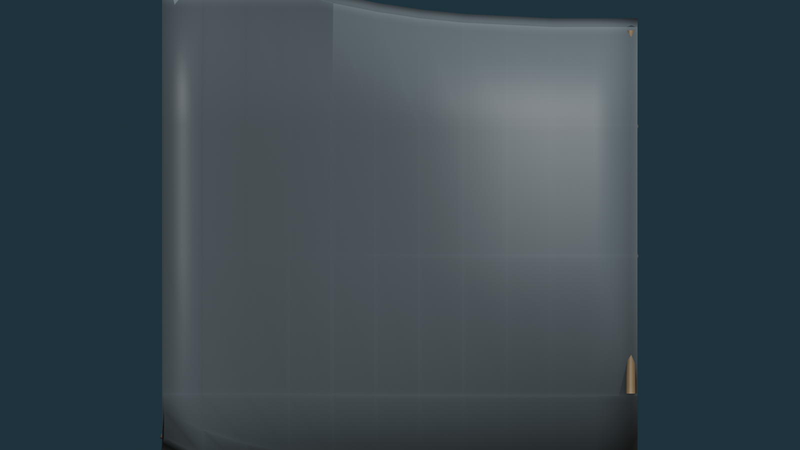
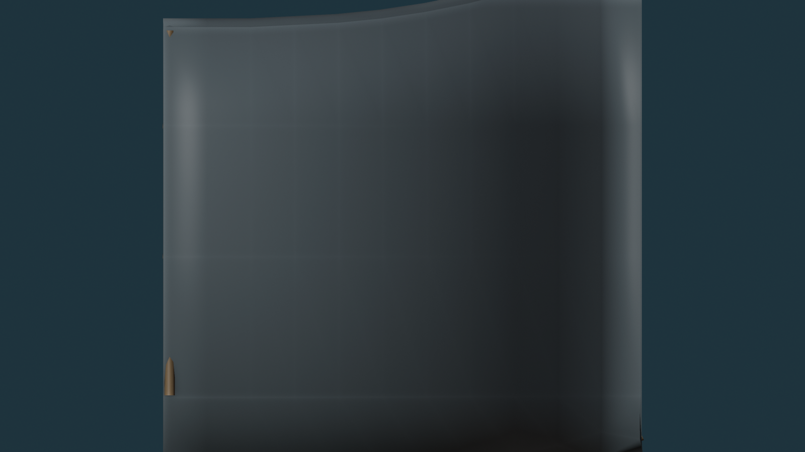
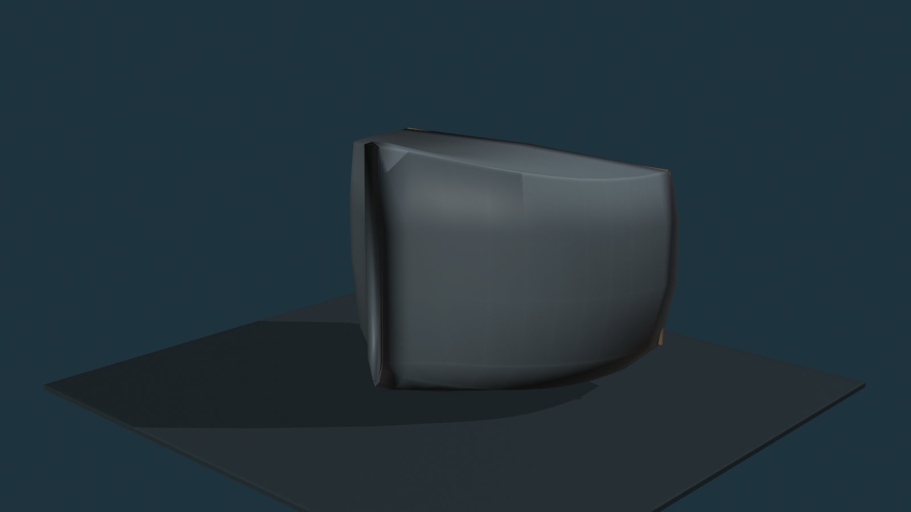

RED = remove hull plating
GREEN = surviving plate island / shell stays
CYAN = protected intact structure
YELLOW = selected exposed rib
ORANGE = peel direction
V02 target: the ship should still read as a ferry hull first. Damage is concentrated into one major casualty field plus one smaller tear per side. Continuous shell remains around and between the openings, and green plate islands survive inside the main fields so the decks do not become floating slabs.
Port Side

Port: reduced P1 major field + small P2 lower tear. Two surviving plate islands remain inside P1. Only two ribs are deliberately exposed.
Starboard Side

Starboard: reduced S1 major field + smaller S2 forward tear. Two surviving plate islands remain in S1. Only two ribs are deliberately exposed.
Three-Quarter Context

Context only. Port/starboard orthographic maps are the placement authority.
Do not build 3D yet.
PASS / FAIL / changes on this V02 map first. If V02 passes, the next 3D trial will implement only these smaller red fields while explicitly preserving the green plate islands and cyan protected regions.